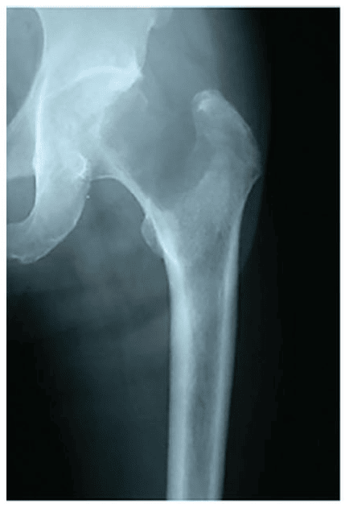

Sábado, 10 de outubro de 2026Oncologia ortopédicaTEOT / TARO
Fêmur sob ameaça
A fratura ainda não aconteceu. E agora?
57 anos. Metástase renal. Dor moderada no quadril.
A imagem põe em pauta duas decisões: quantos pontos tem o Mirels e qual deve ser o próximo passo para este fêmur.

Documento do caso Radiografia original da questão. O risco está nos detalhes.
Plantão em debate
O escore muda a ordem do tratamento.
Nesta edição
A questão · quatro pistas · a conduta · o gabarito
Arraste para investigarortoquestoes.com.br
Orto QuestõesCaderno Provas · 2/5
Diário do Plantão
Leia a radiografia Localização, natureza da lesão e quanto osso está comprometido.
A questão como caiu
Paciente com 57 anos refere dor moderada no quadril esquerdo e diagnóstico de neoplasia renal com metástase para o fêmur. O escore de MIRELS e a conduta mais adequada são, respectivamente:
A8 e radioterapia.
B8 e fixação cirúrgica.
C11 e radioterapia.
D11 e fixação cirúrgica.
Sua letra vai para a redação
Comente A, B, C ou D antes de arrastar. A próxima página traz as quatro pistas do Mirels.
Faça seu palpite2/5
Orto QuestõesDossiê da radiografia · 3/5
Quatro pistas
O Mirels organiza o risco. Faça a soma antes de virar a página.
Localização
Região peritrocantérica
O sítio peritrocantérico suporta alta carga e tem o maior peso neste critério do Mirels.
3 pontos
Componente clínico
Dor moderada
A intensidade da dor vem do enunciado. Dor moderada vale dois pontos no escore.
2 pontos
Natureza radiográfica
Lesão lítica
A radiografia mostra destruição óssea. Lesões líticas recebem a maior pontuação deste critério.
3 pontos
Tamanho
Mais de ⅔ do diâmetro
A lesão ocupa mais de dois terços da largura do osso. O comprometimento extenso recebe a maior pontuação.
3 pontos
Nota do editor
Cada critério vale de 1 a 3. Peritrocantérico já vale 3. Este é um dos detalhes que a prova espera que você reconheça.
A soma está nas pistas3/5
Orto QuestõesEditorial · 4/5
Diário do Plantão
A segunda decisão
O risco mecânico define a prioridade.
Aliviar a dor e proteger o osso são dois objetivos do tratamento.
Mirels elevado
≥9
alto risco de fratura
A radioterapia isolada pode aliviar a dor, mas não devolve resistência ao osso a tempo. Um fêmur vulnerável precisa de proteção mecânica.
Primeiro, a estabilidade. A fixação cirúrgica profilática protege a estrutura antes que uma fratura patológica aconteça.
Depois, o tratamento local. A radioterapia no leito vem após a estabilização, na sequência indicada para este caso.
O escore apoia a avaliação clínica e radiográfica da equipe.
O gabarito na próxima página4/5
Orto QuestõesGabarito · 5/5
O veredito
Resposta oficial · alternativa D
11 e fixação cirúrgica.
3 + 2 + 3 + 3 = 11 pontos
A
8 e radioterapia. Erra a soma e a conduta: o escore é maior e o risco mecânico exige estabilização.
B
8 e fixação cirúrgica. A conduta está certa. A soma, não: os quatro critérios totalizam 11.
C
11 e radioterapia. Acerta a soma. A radioterapia isolada deixa o fêmur vulnerável à fratura.
Para a prova
Mirels alto no fêmur: estabilizar antes de irradiar.
Questão grátis todo dia.
Conta gratuita com limite diário.
Salve e revise depois.
Orto Questõesortoquestoes.com.br
Orto QuestõesBoletim do plantão · 1/2
Diário do Plantão
Oncologia ortopédicaQuestão do diaTEOT / TARO
Fêmur sob ameaça. E agora?
Imagem original da questão.
Paciente com 57 anos refere dor moderada no quadril esquerdo e diagnóstico de neoplasia renal com metástase para o fêmur. O escore de MIRELS e a conduta mais adequada são, respectivamente:
A8 e radioterapia.
B8 e fixação cirúrgica.
C11 e radioterapia.
D11 e fixação cirúrgica.
Antes de ver a resposta
Faça a soma e escolha a conduta. O gabarito está no próximo story.
A · B · C · D1/2
Orto QuestõesResposta comentada · 2/2
O veredito
Alternativa D
11 e fixação cirúrgica.
Quatro pistas explicam a decisão.
Região peritrocantérica3
Dor moderada2
Lesão lítica3
Tamanho > ⅔ do diâmetro3
Para a prova
Mirels alto no fêmur: estabilizar antes de irradiar.
No caso da questão, a radioterapia isolada não resolve o risco mecânico do osso.
Questão grátis todo dia.
Treine com questões de prova comentadas. Conta gratuita com limite diário.